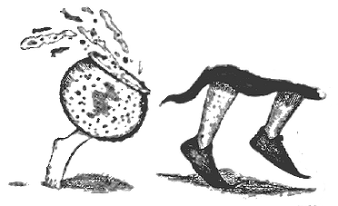
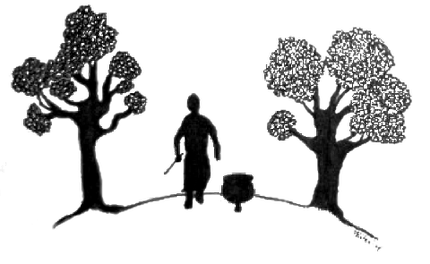

1) BÜYÜCÜ VE ZIPLAYAN KAZAN
Bir zamanlar iyi kalpli bir ihtiyar büyücü varmış, sihrini komşularına yardım etmek için hiç esirgemeden ve akıllıca kullanırmış. Gücünün gerçek kaynağını açığa vurmak yerine de sanki bütün o iksirler, tılsımlar ve panzehirler "şans getiren kazanım" dediği küçük kazandan kullanıma hazır halde çıkıyormuş gibi yaparmış. Kilometrelerce uzaktan insanlar dertlerine şifa bulsun diye gelir, büyücü de memnuniyetle kazanını şöyle bir karıştırır ve her şeyi yoluna koyarmış.
Bu pek sevilen büyücü epey ileri yaşa kadar yaşadıktan sonra ölmüş ve tüm eşyalarını tek oğluna bırakmış. Bu oğul, iyi huylu babasından çok farklı bir mizaca sahipmiş. Sihir kullanamayan insanların beş para etmediğine inanırmış, sağlığında babasının komşularına sihir yoluyla yardımcı olmasına da sık sık karşı çıkarmış zaten.
Babasının ölümünün ardından oğul, eski kazanın içinde, üzerinde adı yazılı küçük bir paket bulmuş. İçinde altın vardır umuduyla paketi açmış ama onun yerine yumuşak kalın, ayağa giyilemeyecek kadar küçük ve öbür teki ortalıkta görünmeyen bir terlik bulmuş. Terliğin içinde bir parşömen parçasında şu sözcükler yazıyormuş: “Buna hiçbir zaman ihtiyacın olmaması ümidiyle, oğlum."
Oğul, babasının yaşlılıktan sulanmış beynine veryansın edip terliği tekrar kazanın içine atmış ve bundan böyle kazanı çöp kovası olarak kullanmaya karar vermiş.
Tam da o gece bir köylü kadın, kapısını çalmış.
“Torunumun her yanını siğil bastı, beyim" demiş kadın. "Babanız o eski kazanda özel bir lapa yapardı..."
"Defol!" diye haykırmış oğul. "Senin veledinin siğillerinden bana ne?”
Kapıyı yaşlı kadının suratına çarpmış.
Anında mutfağından bir tangırtı, bir patırtı gelmiş. Büyücü asasını yakıp kapıyı açmış ve hayretler içinde, karşısında babasının eski kazanını bulmuş: Kazan, altından tek bir pirinç ayak bitmiş halde orada, mutfağın ortasında zıp zıp zıplıyor, iri döşeme taşlarının üzerinde korkunç bir ses çıkarıyormuş. Büyücü şaşkınlıkla kazana yaklaşmış ama onun bütün yüzeyinin siğillerle kaplanmış olduğunu görünce telaşla gerilemiş.
"İğrenç nesne!" diye haykırmış ve kazanı önce Kaybetmeye, sonra sihirle temizlemeye, en sonundaysa zorla evden dışarı çıkarmaya çalışmış. Ancak büyülerinden hiçbiri işe yaramamış, kazanın hoplaya zıplaya peşi sıra mutfaktan çıkmasını ve her bir ahşap merdivende tangırdayıp tungurdayarak onu yatağına kadar takip etmesini de engelleyememiş.
Büyücü başucundaki siğilli eski kazanın tangırtısından bütün gece uyuyamamış. Kazan ertesi sabah da ısrarcı bir şekilde büyücünün peşinden hop hop kahvaltı masasına gitmiş. Tangır, tangır, tangır diye zıplamaya devam ediyormuş pirinç ayaklı kazan ve daha büyücü yulaf ezmesine başlamadan bir kez daha kapısı çalmış.
Kapıda yaşlı bir adam duruyormuş.
“İhtiyar eşeğim için geldim, beyim" diye açıklamış adam. "Kayboldu gitti, yahut çalındı. Onsuz mallarımı pazara götüremem, bu akşam ailem aç kalacak.”
"Ben ise şimdi açım!” diye gürlemiş büyücü ve ihtiyar adamın yüzüne kapıyı çarpmış.
Tangır, tangır, tangır ediyormuş kazanın tek pirinç ayağı zeminde, ama şimdi patırtısına bir de kazanın derinliklerinden yankılanan eşek anırtıları ve aç insan inlemeleri eklenmiş.
“Tek dur. Sessiz ol!" diye bağırmış büyücü, ama onca sihri, onca gücü siğilli kazanı durdurmaya yetmemiş. Kazan bütün gün onun peşi sıra hoplamaya devam etmiş, nereye giderse gitsin, ne yaparsa yapsın anıra anıra, inleye inleye ve tangırdaya tangırdaya onu takip etmiş. O akşam kapı üçüncü kez çalınmış. Kapı eşiğinde genç bir kadın varmış, kalbi yırtılacakmış gibi ağlıyormuş.
"Bebeğim feci şekilde hasta" demiş kadın. "Bize yardım eder misiniz, lütfen? Babanız bir derdim olduğunda gelmemi...”
Fakat büyücü, kapıyı kadının yüzüne çarpmış. Bu defa da eziyet verici kazan ağzına kadar tuzlu suyla dolmuş. Bir taraftan zıplayıp yerlere gözyaşı saçıyor, bir taraftan da anırmaya, inlemeye ve siğil çıkartmaya devam ediyormuş.

O hafta büyücünün kulübesine başka köylü gelmemiş yardım istemeye, ama kazan onu köylülerin rahatsızlıklarından haberdar etmeye devam etmiş. Birkaç gün sonra artık anırmakla ve inlemekle, gözyaşı dökmekle, sıçramakla, siğil çıkarmakla yetinmiyor, bir taraftan da boğuluyor ve öğürüyor, bebek gibi ağlıyor, bir köpek gibi sızlanıyor, etrafa bozuk peynir, ekşi süt ve bir sürü aç sümüklüböcek saçıyormuş.
Büyücü başucunda kazanla uyuyamıyor, yemek yiyemiyormuş ama kazan gitmeyi reddediyormuş. Büyücü onu susturmayı ve durdurmayı da başaramamış.
Sonunda büyücü artık dayanamayacak hale gelmiş.
"Bütün sorunlarınızı, bütün dertlerinizi, bütün acılarınızı getirin bana!" diye haykırmış, evden fırlayıp gecenin karanlığına karışarak. Kazan da zıplaya zıplaya köye giden yolun kenarından onu takip etmiş. "Gelin! Gelin tedavi edeyim, onarayım, rahatlatayım sizi! Babamın kazanı bende, hepinizi iyileştireceğim!"
Ve hâlâ peşi sıra hoplayan sinir bozucu kazanla birlikte caddede koşup her bir yana doğru büyü yapmaya başlamış.
Bir evde küçük kız uyurken siğilleri kaybolup gitmiş; kayıp eşek uzak bir çalılıktan Çağırılmış ve usulca ahırına konmuş; üzerine geyik otu serpilen hasta bebek iyileşmiş ve yüzüne pembelik gelmiş halde uyanmış. Hastalığa ve acıya boğulmuş her evde büyücü elinden geleni yapmış. O elinden geleni yaptıkça da yanındaki kazan yavaş yavaş inlemeyi ve öğürmeyi bırakmış, sessizleşmiş, pırıl pırıl ve tertemiz olmuş.
“Ee, kazan?" demiş titreyen büyücü, güneş yükselirken.
Kazan geğirerek, içine atılan o tek terliği geri fırlatmış ve büyücünün onu pirinç ayağına giydirmesine izin vermiş. İkisi birlikte büyücünün evine doğru yola koyulmuşlar ve kazanın ayak sesi nihayet azalmış. Fakat o günden sonra, kazan terliğini çıkarır da yeniden zıplamaya başlar korkusuyla büyücü de tıpkı babası gibi köylülere yardım etmiş.
